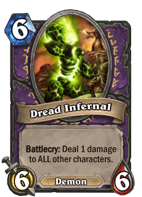
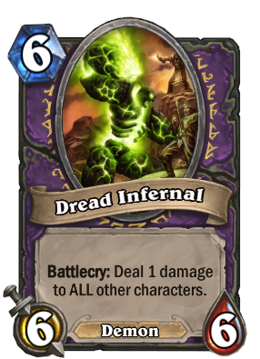

Videojuegos

Últimamente, una de las cosas que más me ha llamado la atención en los videojuegos es cómo las versiones más estéticas de un objeto o un personaje tienen un valor mucho mayor para los jugadores que las versiones normales. Esto lo podemos apreciar en el juego de cartas Hearthstone, donde las versiones doradas de las cartas cuestan hasta 10 veces más que las normales. A continuación podremos ver ejemplos de las cartas en sus versiones normales y doradas.


 

Otro ejemplo en el que la estetica tiene un valor muy grande es Heroes Of the Storm.
Tassadar:Versión normal
Tassadar:Versión alternativa
Nova:Versión normal
Nova:Versión alternativa
Thrall:Versión normal
Thrall:Versión alternativa
Uther:Versión normal
Uther:Versión alternativa
Cabe resaltar que estos apariencias alternativas tanto como para Hearthstone como para Heroes of the Storm no modifica las estadísticas del personaje, solo cambia su apariencia.